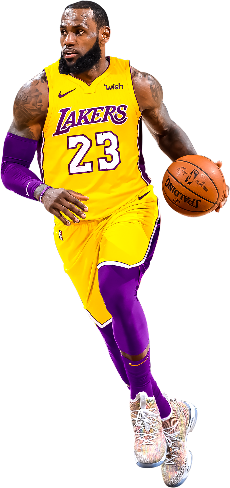

-
Abdul-Jabbar
1° Lugar
38,387 pontos
Mais um pouco e o lendário pivô Kareem Abdul-Jabbar (16/04/1947) atinge os 40 mil pontos. Já pensou? Em 20 anos de NBA, Abdul-Jabbar somou números inacreditáveis: seis prêmios de melhor jogador da temporada (o maior de todos nesse quesito), dois de melhor das finais, 19 participações no All-Star Game (número recorde!) e seis títulos da NBA, o primeiro pelos Bucks e os demais pelos Lakers, nos gloriosos anos 80. Um verdadeiro fenômeno do basquete!
-
LeBron James
2° Lugar
37,062 pontos
LeBron James (30/12/1984) é um dos poucos nesta lista que ainda estão em atividade (atualmente no Lakers). Portanto, podem esperar que ainda vêm muitas cestas por aí. No dia 6 de março de 2019, King James realizou a façanha de passar Jordan e no dia 25 de janeiro de 2020 ultrapassou Kobe Bryant. E ele não parou por aí! Em 20 de março de 2022, ultrapassou Karl Malone, passando para a segunda posição! LeBron James já foi campeão da NBA quatro vezes (e eleito o melhor das finais nas quatro ocasiões).
-
Karl Malone
3° Lugar
36,928 pontos
Há um dado curioso na carreira de Karl Malone (24/07/1963), o terceiro maior cestinha da história da NBA: nunca foi campeão. Nem mesmo a transferência do Utah Jazz para os Lakers em 2003, já no finzinho da carreira, alterou a sina dos vice-campeonatos. Apesar disso, é considerado um dos maiores alas-pivôs de todos os tempos, sendo eleito duas vezes o melhor jogador da temporada em plena era Jordan.